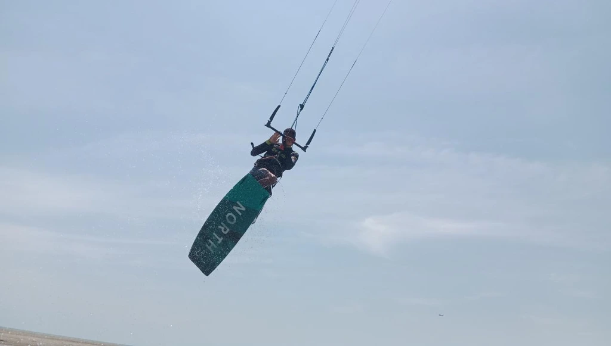

La Boquilla Cartagena: The Complete Kitesurf Spot Guide

If you ask any experienced kiter in South America where the best combination of consistent wind, safe water, and world-class Caribbean scenery is, La Boquilla in Cartagena will be near the top of every list. But "La Boquilla" is a broad term. This guide breaks down the spot in the detail it deserves — from GPS zones to seasonal quirks, with insider knowledge from people who've been riding and teaching here for years.
Where Exactly is the Kite Spot?
La Boquilla is a peninsula located approximately 8 km north of Cartagena's historic center. The kitesurfing area is concentrated along the Caribbean-facing side of the peninsula, between the residential community beach and the point near the Ciénaga de la Virgen (the lagoon system to the east).
The sweet spot: The open beach area roughly 500m north of the main La Boquilla village. Here you have: unobstructed horizon to the north (clean wind), a sandy bottom extending 300m offshore, minimal boat traffic, and the protective peninsula blocking southern chop.
Getting here from central Cartagena takes about 15–20 minutes by taxi (approx. COP $20,000–$25,000). We include transport from your hotel in our premium packages.
The Wind: What You Need to Know
Direction: The Trade Winds Advantage
Cartagena sits in the path of the Caribbean Trade Winds — the same steady winds that carried Columbus across the Atlantic. These are not gusty, unpredictable coastal winds. They are oceanic winds: consistent, building gradually, and predictable. At La Boquilla, they arrive from the northeast (ENE), hitting the beach at a perfect side-onshore angle.
Speed: Typical Ranges by Month
- December – March (High Season): 18–28 knots. The strongest and most consistent window. A 9m kite is often sufficient. These are the most exciting months for experienced riders, but conditions can be challenging for beginners on peak days.
- April (Right Now): 14–20 knots. The wind is transitioning. Mornings are often lighter, afternoons build to solid riding conditions. Ideal for learning because it's forgiving but still reliable.
- May – July (Veranillo): 12–18 knots. The "little summer" brings lighter, highly consistent winds. Perfect for beginners, foilers, and wing foilers. Larger kite sizes (12–14m) are used.
- August – November (Low Season): Variable. Some weeks are excellent, others have long calm periods. Advanced riders still find great windows; we advise beginners to target other months.
Thermal Effect
Cartagena's land heats up significantly by midday, creating a local thermal effect that amplifies the Trade Winds in the afternoon. The wind almost always builds between 1pm and 5pm, making early afternoon the ideal riding window. Morning sessions (before 11am) can be lighter, especially outside peak season.
The Water: Conditions for All Levels
The Caribbean at La Boquilla has a unique geography that creates different zones within the same beach:
- The Lagoon Zone (0–50m offshore): Shallow (knee to hip deep), protected, and completely flat. This is where we teach beginners. Falls hurt nothing — sandy bottom, warm water, slow drift to shore.
- The Intermediate Zone (50–200m offshore): Water depth increases to 1–1.5m. Small wind chop begins here. Ideal for water starts and first rides.
- The Open Ocean (200m+): Larger chop (0.5–1m waves), stronger pull, and full riding conditions. Where experienced riders perform transitions, jumps, and speed runs.
Water temperature: A constant 27–29°C year-round. No wetsuit needed. A rash guard for sun protection is sufficient.
Hazards & Local Rules
- Stone groynes (espolones): Spaced roughly every 800m along the beach. Never fly downwind of one without a clear exit plan. We brief all students on their exact locations before entering the water.
- Fishing boats: Local artisanal fishermen operate from the beach, especially in the early morning. Right of way always goes to the boat. We schedule sessions to avoid peak fishing traffic.
- Other kiters: La Boquilla is increasingly popular. During peak season, 15–25 kites can be in the air simultaneously. Standard IKO right-of-way rules apply strictly.
- Jellyfish (sporadic): Occasional jellyfish appear after storms or current changes. We monitor these and will advise if conditions make a session inadvisable.
Facilities & Logistics
- Gear storage: We have a secure facility at the beach for equipment — no need to carry heavy kite bags on public transport.
- Fresh water rinse: Available to rinse gear after sessions. Salt corrosion is the enemy of good gear.
- Food & drinks: Several local restaurants ("cocadas" vendors, fried fish spots) are within 200m of our launch zone. We recommend the sancocho de pescado at Restaurante La Boquilla after a long session.
- Parking: Available along the main road. Taxis and ride-share apps reach the spot easily.
La Boquilla At a Glance
- Wind direction: ENE (side-onshore — safe for all levels)
- Best months: December–March (strong), April–July (ideal for learning)
- Water temp: 27–29°C year-round
- Bottom: Sandy (no coral, no rocks in kite zone)
- Distance from center: ~8km, 15–20 min by taxi
- Best time of day: 1pm – 5pm (thermal build)